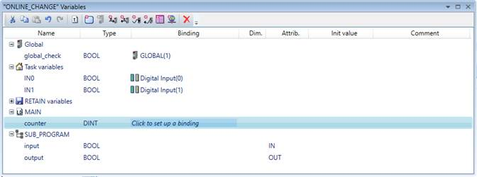
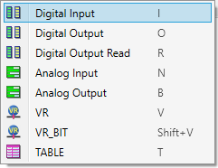
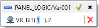
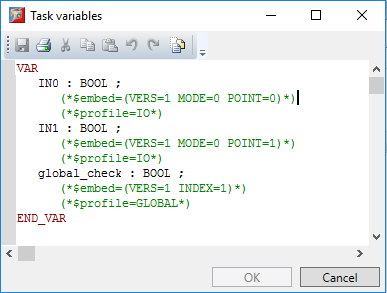

The Variable Editor displays all the variables that are in use in the IEC task. The variables are grouped into three groups, Global, Task and Retain. Then for each IEC program in the IEC task, a variable group with the same name as the program exists.
A new variable can be added, by selecting the corresponding group, and pressing the “Insert” key on the keyboard. A new variable will be inserted in the selected group and will have default name, type, initial value, etc.
The variable has the following properties, which are separated as columns in the variables editor:
|
Property |
Description |
|
Name |
The name of the variable. To edit this property, double-click on it. |
|
Type |
The type of variable. Can be some of the predefined IEC types, or some user-defined type. To edit this property, double-click on it. |
|
Binding |
Binding of variable to controller memory space – I/O point, VR, TABLE. By default variables are not bound. |
|
Dim |
Dimensions of the variable. For example, arrays are created by specifying the size of the array in this field. To edit this property, double-click on it. |
|
Attrib |
Attributes of the variable. Depends on the variable type and profile. To edit this property, double-click on it. V ariables can have the “Read-only” attribute set. |
|
Init value |
The initial value of the variable, depending on its type. To edit this property, double-click on it. |
|
Comment |
A short comment text for the variable. To edit this property, double-click on it. |
Each variable could be bound to a memory area on the controller – a VR or TABLE entry, an input or output. Bindings are editor in the variables editor by clicking on the corresponding row of the editor in the “Binding” column. When variable is not bound, and the mouse hovers over it there is a “Click to set up a binding” text displayed. When clicked, the following menu appears:

The possible binding types are described in the following table:
|
Binding |
Description |
|
Digital Input |
the variable can be mapped to a Digital Input, by specifying the input index |
|
Digital Output |
the variable can be mapped to a Digital output, by specifying the output index
|
|
Digital Output Read |
the variable can be mapped to a Digital Output, by specifying the output index. Similar to the Trio BASIC READ_OP command behaviour |
|
Analog Input |
the variable can be mapped to an Analogue Input, by specifying the input index |
|
Analog Output |
the variable can be mapped to an Analogue Output, by specifying the output index |
|
VR |
the variable can be mapped to a VR variable, by specifying the index in the VR memory |
|
VR_BIT |
the variable can be mapped to a bit of a VR variable, by specifying the index in the VR memory and the bit number |
|
TABLE |
the variable can be mapped to a TABLE location, by specifying the index in the table memory |
When a variable has a binding, it is displayed in the “Binding” column of the variables editor. When clicked, it is displayed in a dialog where the binding can be modified or removed.

In some situations it’s useful to be able to edit variables manually in text mode, for example, when inserting variables from another IEC 61131-3 system or editing multiple variables at once.
Motion Perfect provides editing of variables in text mode for each program and for Global, Task and Retain variable groups.
There is an “Edit variables as text” button on the toolbar that launches a text editor where variables can be edited in text mode. Changes are applied when closing the editor by pressing its “OK” button.

Initial values of variables can be specified so when the task starts the variables are initialized to custom values instead of 0.
To edit a variable’s initial value simply double-click on the “Init Value” column in the grid editor or use the following syntax in text editor:
<variable name> : <variable type> := <initial value>;
For example, the variable my_str of STRING(250) type can be initialized with the following line in text mode:
my_str : STRING(250) := 'hello world';
Array variables can have initial values. The syntax of the initial value is the following:
[value1, value2, value3, value4, …, valueK]
where K is less or equal the dimension of the array.
For example the array variable my_arr which is an array of integers with 10 elements can be initialized with the following code in text mode:
my_arr : ARRAY [0 .. 9] OF INT := [0, 1, 2, 3, 4, 5, 6, 7, 8, 9];
Complex variables of structure types or function block instances can have initial values too. The syntax to initialize members of structure variables or function block instances is the following:
(<member1> := <value1>, <member2> := <value2>, …)
Please note that <value1,2,3…> could be a nested structure variable or function block instance initialization. Hence it is possible to have very complex initializing syntax.
A simple example with a variable of structure type. The structure type is defined as
STRUCT MyStructType
flag : BOOL;
id := DINT;
END_STRUCT;
Declaring a variable of this structure type with initial values can be done with the following syntax:
VAR
my_struct_variable : MyStructType := ( flag := true, id := 1000 );
END_VAR;
It is possible to give initial values to arrays of complex types. The syntax is the following
[ <value1>, <value2>, … <valueK>]
Where K is less or equal to the array dimension and <value i>, i = 0 to K follows the complex variable initial value syntax (member1 := v1, member2 := v2, …).
For example an array with 3 elements of the above structure type MyStructType can be declared with the following code in text mode:
VAR
my_complex_arr : ARRAY [0..2] OF MyStructType := [ (flag := true, id := 1), (flag := true, id := 2), (flag := true, id := 3) ];
END_VAR
A rather complicated case is where a structure type has a member that is an array. It is possible to create a variable of this structure type and initialize its array member to a predefined value.
Consider the structure defined as following:
STRUCT MyStructType
id : DINT;
arr : ARRAY [0..9] OF DINT;
END_STRUCT;
Declaring and initializing a variable of this type can be done with the following syntax:
VAR
my_complex_var : MyStructType := ( id := 100, arr := [ 0, 1, 2, 3, 4, 5, 6, 7, 8, 9] );
END_VAR;